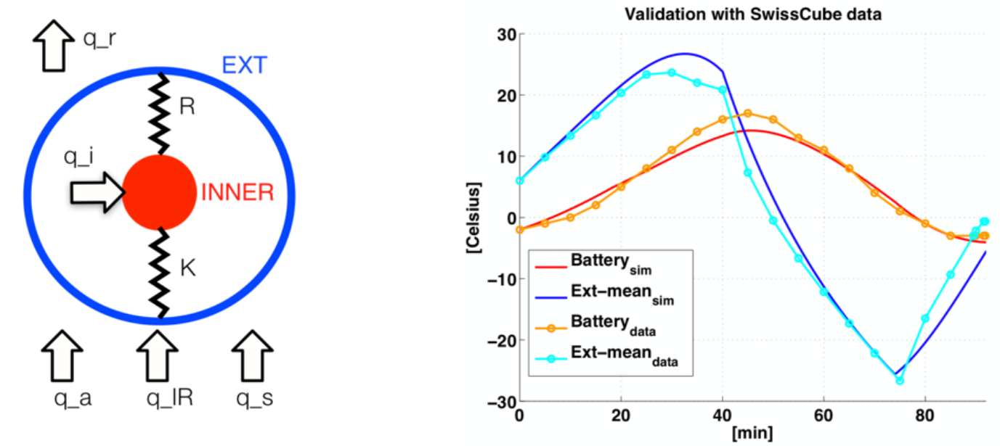
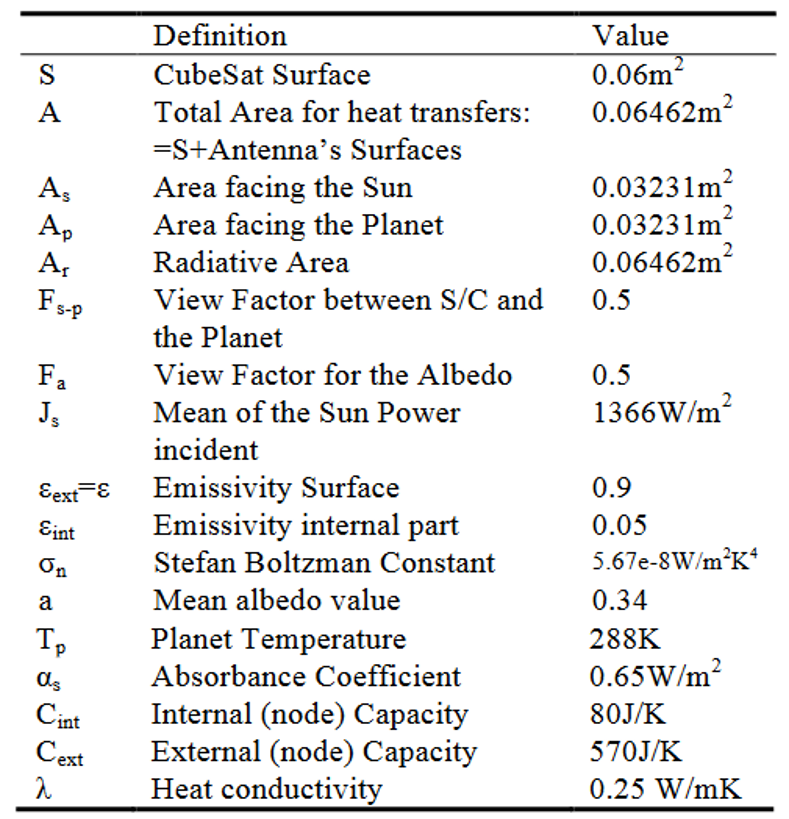

1.5. Thermal Model for CubeSat#
The aim of this tutorial is to set up a satellite thermal nodal model in order to assess the power requirements of the thermal control system.
1.5.1. Two nodes thermal model#
The paper [Rossi, 2013] outlines the creation of a Thermal Model Analysis for a CubeSat as based on the SwissCube’s flight data from 2009 to 2012. The external faces and internal components of the CubeSat were simplified into two nodes of the aforementioned respective general locations, with the external node pertaining to a spherical surface representative of the six-phases of a CubeSat 1U at mean temperature, and the internal node being based on the thermally controlled battery pack.
SwissCube thermal model: 
The above illustrated figures show the simplified two node model defined to eventually simulate heat transfers between and within the internal and external references of a cube satellite (left), and the comparison or validation of the created thermal model by [Rossi, 2013] as compared to the actual experimental data from the SwissCube satellite (right).
The heat transfer in terms of conduction and radiation were analyzed with each node’s interactions with the environment and with each other were taken into account with respect to the Fourier and Stefan-Boltzmann Equations, as well as Lambert’s law, to ultimately arrive to the following equations:
[1] Solar Radiation: $\(q_s=A_s\alpha_sJ_s\)\(
[2] Infrared from Earth: \)\(q_p=A_pF_{s-p}\varepsilon\sigma_nT_p^4\)\(
[3] Albedo: \)\(q_a=A_pF_a\alpha_sJ_sa\)\(
[4] Radiation to Deep Space: \)\(q_r=A_r\varepsilon\sigma_nT^4\)\(<br>
Among which the first three equations refer to heat input, and the last to heat output. Where \)A\( generally refers to the area, \)\alpha\( the absorptivity, \)J_s\( the Solar Constant mean value, \)F\( the geometric view factor, \)\varepsilon\( the emmisivity, \)\sigma\( the Stefan-Boltzmann constant, and \)T$ the absolute temperature.
In a more general context, the following equation was used, and the coefficients K and R were derived from the assumption of two concentric nodal spheres with specified radii.
$\(C_i\frac{dT_i}{dt}=\sum_{i\not=j}K_{ij}(T_j-T_i)+\sum_{i\not=j}R_{ij}(T_j^4-T_i^4)+q_i\)\(
\)\(i,j=1,...,n\)\(<br>
\)\(K=\frac{4\pi\lambda r_{int}r_{ext}}{r_{ext}-r_{int}}\)\(<br>
\)\(R=\frac{4\pi r_{int}^2}{\frac{1}{\varepsilon_{int}}+\frac{1-\varepsilon_{ext}}{\varepsilon_{ext}}(\frac{r_{int}}{r_{ext}})^2}\)$
\(R_{int}\) and \(\lambda\) parameters was tuned given the flight data and theoretical values. The above figure shows the differential equation with respect to the evolution of time in the system. Overall, the simplified model was proven to be close and consistent in terms of slopes with regards to the actual flight data. To be able to use this lumped parameters model, it is necessary to adapt the value of the parameters to the configurations of interest.
Tuned SwissCube parameters: 
{kind=link}
import math
import numpy as np
from scipy.integrate import odeint
import matplotlib.pyplot as plt
S = 0.06 # [m²] Cubesat surface
A = 0.06462 # [m²] Total area for heat transfers
A_s = 0.03231 # [m²] Area facing the sun
A_p = 0.03231 # [m²] Area facing the planet
A_r = 0.06462 # [m²] Radiating area
F_sp = 0.5 # [-] view factor between CubeSat and the planet
F_a = 0.5 # [-] view factor for the Albedo
J_s = 1366 # [W/m²] Mean of the Sun Power
E_ext = 0.9 # [-] Emissivity surface
E_int = 0.8 # [-] Emissivity internal part
SB_const = 5.67e-8 # [-] Stefan Boltzman constant
a = 0.34 # [-] Mean albedo value
T_p = 288 # [-] Planet temperature
ABS_const = 0.65 # [K] Absorbance coefficient
C_int = 80 # [J/K] Internal node capacity
C_ext = 570 # [J/K] External node capacity
HC = 0.25 # [W/mK] Heat conductivity
# The value below is supposed to be the temperature for deep space
# Not sure about this, as it doesn't make much sense for q_r to just be zero
T = 0
r_ext = math.sqrt(S/(4*math.pi))
r_int = 0.01
# Conduction
# K = -(4*math.pi*HC*r_ext*r_int)/(r_ext-r_int)*0+1
# calculate this coefficient assuming that the corresponding thermal resistance is due to spacers
# Rth = L / kS
Dspacer = 6e-3 # [m] spacer diameter
Lspacer = 15e-3 # [m] length of a spacer
Sspacer = 3.14*(Dspacer/2)**2 # [m²] area with diameter
kspacer = 0.35 # [W/m/K] thermal conductivity
nspacer = 4 # [-] spacers number
Rth = Lspacer/kspacer/Sspacer
K = nspacer/Rth
# Radiation
# R = (4*math.pi*(r_int**2)*SB_const)/((1/E_int)+(((1-E_ext)/E_ext)*((r_int/r_ext)**2)))
R = 2*(70e-3*70e-3)*SB_const/(1/E_int+1/E_ext-1)
q_p = A_p*F_sp*E_ext*SB_const*(T_p**4) # Planet radiation
q_r = A_r*E_ext*SB_const*(T**4)
def model(y,t):
global power
T1 = y[0] # Internal temperature
T2 = y[1] # External temperature
if t<35*60:
q_int = 0
q_s = A_s*ABS_const*J_s # Sun power
q_a = A_p*F_a*ABS_const*J_s*a # Albedo power
elif t<75*60:
q_int = 0
q_s = 0
q_a = 0
else:
q_int = 0
q_s = A_s*ABS_const*J_s
q_a = A_p*F_a*ABS_const*J_s*a
q_sp = A_p*F_sp*E_ext*SB_const*((T2+273.15)**4) # Satellite -> Planet radiation
q_sr = A_r*E_ext*SB_const*((T2+273.15)**4) # Satellite -> Space radiation
# Power exchange between external and internal node
Pint=(K*(T2-T1))+(R*((T2+273.15)**4-(T1+273.15)**4)) + q_int
#utilized q_int to keep heat target
#find a peak value for Power so it doesn't get too cold; hysterisis control
# Internal temperature variation
dT1dt = Pint/C_int
# External temperature variation
dT2dt = ((K*((T1-T2)))+(R*((T1+273.15)**4-(T2+273.15)**4)) + q_s + q_p + q_a + q_r - q_sp - q_sr)/C_ext
dydt = [dT1dt,dT2dt]
return dydt
y0 = [0,5]
t = np.linspace(0,90*60,1000)
y = odeint(model,y0,t)
print('K: ' + str(K))
print('R: ' + str(R))
plt.plot(t/60,y)
plt.xlabel('Time [min]')
plt.ylabel('Temperature [°C]')
plt.show()
T1=y[:,0]
T2=y[:,1]
Pint=K*(T2-T1)+R*((T2+273.15)**4-(T1+273.15)**4)
plt.plot(t/60,Pint)
plt.xlabel('Time [min]')
plt.ylabel('Thermal Power [W]')
plt.show()
K: 0.0026376
R: 4.0824e-10


1.5.2. Thermal conductance#
The conductive heat transfer term depends on the nature and shape of the fasteners linking the cards to the satelitte structure. Nylon, invar or permaglass can be used to make cylinder-like spacers.
Material |
Thermal conductivity |
|---|---|
Nylon |
0.25 W/mK |
Invar |
5.8 W/mK |
Stainless steel |
14 W/mK |
Permaglass |
0.35 W/mK |
Note: Nylon has less mechanical strength at high temperatures.
Question: Suggest the expression for a conduction term \(K\) corresponding to 4 spacers of diameter \(D_{spacer}\) and length \(L_{spacer}\).
1.5.3. Thermal radiation#
Le terme de transfert thermique en radiation Thermal radiation
En rayonnement:
coefficient d’emissivité de surfaces typiques (fonction de la peinture par exemple) a priori plutot partir sur des plans
1.5.4. Thermal Capacitance#
1.6. Specification and Simulation#
Defining the Needs for a CubeSat Battery Pack Heating Solution
1.6.1. ####INFORMATION ON CUBESAT BATTERIES üîã#
The OPTIMUS Battery from AAC Clyde Space has strings of cells connected in parallel with cell protection electronics and autonomous integrated heater systems for thermal control. It’s available in varrying battery range capacities [30, 40, and 80 Wh].
The SwissCube Satellite utilized two (2) Varta PoLiFlex LiPo [Lithium Polymer] PLF503759 batteries with a maximum voltage of 4.2 V and a capacity of 1210 mAh
The Varta PoLiFlex LiPo PLF503759 has a typical capacity of 1300 mAh, nominal voltage of 3.7 V, nominal capacity of 1250 mAh, mass of 22.5 g, and dimensions of 58.7 x 5.2 x 37.0 mm (L-H-W)
1.6.2. ####EVALUATION OF THERMAL CAPACITANCE üí°#
Try to evaluate the thermal capacitance of a battery pack composed of :
2 Varta cells
One aluminum box (thickness 1mm)
1 mm thick epoxy resin
The inner dimensions of the box are 11.7 mm x 39 mm x 66 mm, which gives enough space for two batteries.
\(C_{th,total}=c_{alu}.M_{alu}+c_{lipo}.M_{lipo}+c_{epoxy}.M_{epoxy}\)
with the assumptions:
\(c_{lipo}=1000 J/(kg.K)\) and \(m=22.5g\)
\(c_{alu}=896 J/(kg.K)\) and \(\rho_{alu}=2.7 g/cc \)
\(c_{epoxy}=300 J/(kg.K)\) and \(\rho_{epoxy}=1.44 g/cc\)
c_lipo = 1000
c_alu = 896
c_epoxy = 300
p_alu = 2.7
p_epoxy = 1.44
l = 1.17
w = 3.9
h = 6.6
SA = (2*l*w) + (2*l*h) + (2*w*h)
m_lipo = 22.5/1000
m_alu = (2.7*0.1*SA)/1000
m_epoxy = (1.44*0.1*SA)/1000
C_th_tot = (2*c_lipo*m_lipo) + c_alu*m_alu + c_epoxy*m_epoxy
print("C_th_total: " + str(C_th_tot) +" J/K")
print("C_th_alu = %.2f"%(c_alu*p_alu*(l+0.1)*(w+0.1)*(h+0.1)/1000))
C_th_total: 66.683376 J/K
C_th_alu = 82.34
1.6.3. ####DEFINITION OF EQUIVALENT ALUMINUM BOX ⏹#
The dimensions will be scaled to that of the SwissCube Satellite’s Varta PoLiFlex LiPo PLF503759, with 58.7 mm length, 37.0 mm width, and 5.2 mm height or thickness
6061-T6 Aluminum with a thermal capacitance of 237 J/kg-K and density of 2.7 g/cm^3 is commonly used in satellite applications
Basing off the Research Paper’s reference to internal node capacity being 80 J/K, the dimensions of the equivalent aluminum box was previously computed as 13.08 cm length, 8.25 cm width, and 1.16 cm height/thickness
import sympy as sym
import numpy as np
from sympy import solve, Eq
from sympy.abc import x, y, z, a, b
volume = 66.683376/(896*(2.7/1000))
sol = sym.solve(Eq((5.87*x)*(3.7*x)*(0.52*x), volume), x)
x = sol[0]
l = 5.87*x
w = 3.7*x
h = 0.52*x
print('Volume: ' + str(volume))
print('Scaling Factor: ' + str(x))
print('Length: ' + str(l))
print('Width: ' + str(w))
print('Height/Thickness: ' + str(h))
Volume: 27.564226190476187
Scaling Factor: 1.34637967027869
Length: 7.90324866453589
Width: 4.98160478003114
Height/Thickness: 0.700117428544917
With this, all dimensions of the Varta PoLiFlex LiPo PLF503759 shall be multiplied by 2.23 to stay on a scaled factor and obtain a total Thermal Capacitance of 80 J/K, obtaining the following final equivalent dimensions: 7.90 cm length, 4.98 cm width, and 0.700 cm height/thickness
1.6.4. ####2-NODE THERMAL MODEL OF SWISSCUBE üå°#
Note that the model is not to scale but follows the same trend as that of the study by Rossi and Ivanov.
r_int = 0.01
# Conduction
# K = -(4*math.pi*HC*r_ext*r_int)/(r_ext-r_int)*0+1
# calculate this coefficient assuming that the corresponding thermal resistance is due to spacers
# Rth = L / kS
Lspacer = 10e-3 # [m] length of a spacer
Sspacer = 3.14*(8e-3/2)**2/2 # [m²] area with diameter 8mm
kspacer = 0.25*0+10 # [W/m/K] thermal conductivity
nspacer = 4 # [-] spacers number
Rth = Lspacer/kspacer/Sspacer
K = nspacer/Rth
# Radiation
# R = (4*math.pi*(r_int**2)*SB_const)/((1/E_int)+(((1-E_ext)/E_ext)*((r_int/r_ext)**2)))
R = (70e-3*70e-3)*SB_const/(1/E_int+1/E_ext-1)
q_p = A_p*F_sp*E_ext*SB_const*(T_p**4)
q_r = A_r*E_ext*SB_const*(T**4)
def model(y,t):
global power
T1 = y[0]
T2 = y[1]
if t<35*60:
q_int = 0
q_s = A_s*ABS_const*J_s
q_a = A_p*F_a*ABS_const*J_s*a
elif t<75*60:
q_int = 0
q_s = 0
q_a = 0
else:
q_int = 0
q_s = A_s*ABS_const*J_s
q_a = A_p*F_a*ABS_const*J_s*a
q_sp = A_p*F_sp*E_ext*SB_const*((T2+273.15)**4)
q_sr = A_r*E_ext*SB_const*((T2+273.15)**4)
Pint=(K*(T2-T1))+(R*((T2+273.15)**4-(T1+273.15)**4)) + q_int
#utilized q_int to keep heat target
#find a peak value for Power so it doesn't get too cold; hysterisis control
dT1dt = Pint/C_int
dT2dt = ((K*((T1-T2)))+(R*((T1+273.15)**4-(T2+273.15)**4)) + q_s + q_p + q_a + q_r - q_sp - q_sr)/C_ext
# print(((K*(T2-T1))+(R*((T2+273.15)**4-(T1+273.15)**4)) + q_int)/C_int)
dydt = [dT1dt,dT2dt]
return dydt
y0 = [0,0]
t = np.linspace(0,90*60,1000)
y = odeint(model,y0,t)
print('K: ' + str(K))
print('R: ' + str(R))
plt.plot(t/60,y)
plt.xlabel('Time [min]')
plt.ylabel('Temperature [°C]')
plt.show()
T1=y[:,0]
T2=y[:,1]
Pint=K*(T2-T1)+R*((T2+273.15)**4-(T1+273.15)**4)
plt.plot(t/60,Pint)
plt.xlabel('Time [min]')
plt.ylabel('Thermal Power [W]')
plt.show()
---------------------------------------------------------------------------
TypeError Traceback (most recent call last)
Cell In[5], line 59
57 y0 = [0,0]
58 t = np.linspace(0,90*60,1000)
---> 59 y = odeint(model,y0,t)
61 print('K: ' + str(K))
62 print('R: ' + str(R))
File /opt/hostedtoolcache/Python/3.9.18/x64/lib/python3.9/site-packages/scipy/integrate/_odepack_py.py:241, in odeint(func, y0, t, args, Dfun, col_deriv, full_output, ml, mu, rtol, atol, tcrit, h0, hmax, hmin, ixpr, mxstep, mxhnil, mxordn, mxords, printmessg, tfirst)
239 t = copy(t)
240 y0 = copy(y0)
--> 241 output = _odepack.odeint(func, y0, t, args, Dfun, col_deriv, ml, mu,
242 full_output, rtol, atol, tcrit, h0, hmax, hmin,
243 ixpr, mxstep, mxhnil, mxordn, mxords,
244 int(bool(tfirst)))
245 if output[-1] < 0:
246 warning_msg = _msgs[output[-1]] + " Run with full_output = 1 to get quantitative information."
File /opt/hostedtoolcache/Python/3.9.18/x64/lib/python3.9/site-packages/sympy/core/expr.py:345, in Expr.__float__(self)
343 if result.is_number and result.as_real_imag()[1]:
344 raise TypeError("Cannot convert complex to float")
--> 345 raise TypeError("Cannot convert expression to float")
TypeError: Cannot convert expression to float
1.6.5. ####POWER NECESSARY FOR A CONSISTENT 15°C ⚡️#
NOTE: Use the following equation: Power = Heat Load for Desired Temperature / (Thermal Capacitance * Efficiency)
“In this way the heat produced by the resistance inside the battery-box has been setup to turn off once the temperature is over 5ºC and turn on when below the -5ºC. While turned on, in SwissCube, it produces between 100 mW and 150 mW: in the model it has been used 100 mW”
SwissCube’s batteries only performed at maximum 25% efficiency. The heat load to 5ºC is 100 mW, therefore that until 15ºC is computed below along with the equivalent necessary power.
import math
import numpy as np
from scipy.integrate import odeint
import matplotlib.pyplot as plt
S = 0.06
A = 0.06462
A_s = 0.03231
A_p = 0.03231
A_r = 0.06462
F_sp = 0.5
F_a = 0.5
J_s = 1366
E_ext = 0.9
E_int = 0.05*1+0.5*0
SB_const = 5.67e-8
a = 0.34
T_p = 288
ABS_const = 0.65
C_int = 80
C_ext = 570
HC = 0.25
# As derived from the literature
T_lower = -5 # Lower temperature threshold (in °C)
T_upper = 5 # Upper temperature threshold (in °C)
T = 0
r_ext = math.sqrt(S / (4 * math.pi))
r_int = 0.01
# Calculate this coefficient assuming that the corresponding thermal resistance is due to spacers
# Rth = L / kS
Lspacer = 10e-3 # [m] length of a spacer
Sspacer = 3.14 * (8e-3 / 2) ** 2 / 2 # [m²] area with diameter 8mm
kspacer = 0.25 * 0 + 10 # [W/m/K] thermal conductivity
nspacer = 4 # [-] spacers number
Rth = Lspacer / kspacer / Sspacer
K = nspacer / Rth
R = (70e-3 * 70e-3) * SB_const / (1 / E_int + 1 / E_ext - 1)
def model(y,t):
global power
T1 = y[0]
T2 = y[1]
if t<35*60:
q_int = 0
q_s = A_s*ABS_const*J_s
q_a = A_p*F_a*ABS_const*J_s*a
elif t<75*60:
q_int = 0
q_s = 0
q_a = 0
else:
q_int = 0
q_s = A_s*ABS_const*J_s
q_a = A_p*F_a*ABS_const*J_s*a
q_sp = A_p*F_sp*E_ext*SB_const*((T2+273.15)**4)
q_sr = A_r*E_ext*SB_const*((T2+273.15)**4)
Pint=(K*(T2-T1))+(R*((T2+273.15)**4-(T1+273.15)**4)) + q_int
dT1dt = Pint/C_int
dT2dt = ((K*((T1-T2)))+(R*((T1+273.15)**4-(T2+273.15)**4)) + q_s + q_p + q_a + q_r - q_sp - q_sr)/C_ext
# print(((K*(T2-T1))+(R*((T2+273.15)**4-(T1+273.15)**4)) + q_int)/C_int)
dydt = [dT1dt,dT2dt]
return dydt
y0 = [0, 0]
t = np.linspace(0, 90 * 60, 1000)
y = odeint(model, y0, t)
T1 = y[:, 0]
T2 = y[:, 1]
Pint = K * (T2 - T1) + R * ((T2 + 273.15) ** 4 - (T1 + 273.15) ** 4)
def power_control(temperature):
if temperature <= T_lower:
return 100
elif temperature > T_upper:
return 0
else:
return 0
T1=y[:,0]
T2=y[:,1]
Pint=K*(T2-T1)+R*((T2+273.15)**4-(T1+273.15)**4)
plt.plot(t/60,Pint)
plt.xlabel('Time [min]')
plt.ylabel('Thermal Power [W]')
plt.show()
plt.plot(t/60,y)
plt.xlabel('Time [min]')
plt.ylabel('Temperature [°C]')
plt.legend(['Internal', 'External'])
plt.show()
max_temperature = np.max(T1)
min_temperature = np.min(T1)
print("Maximum Temperature of Internal Node (T1):", max_temperature, "°C")
print("Minimum Temperature of Internal Node (T1):", min_temperature, "°C")
power_values = [power_control(temp) for temp in T1]
plt.plot(t / 60, power_values)
plt.xlabel('Time [min]')
plt.ylabel('Power [mW]')
plt.title('Hysteresis Control')
plt.show()
# With the literature, it was said that the active control of 100mW was only activated
# once the temperature reached -5 degrees Celcius, and stopped once it reached 5 degrees Celsius
peak_power = np.max(Pint)
mean_power = np.mean(Pint)
print("Peak Power:", peak_power, "W")
print("Mean Power:", mean_power, "W")


Maximum Temperature of Internal Node (T1): 23.343665483525747 °C
Minimum Temperature of Internal Node (T1): -18.620854817968667 °C

Peak Power: 1.353387383482923 W
Mean Power: -0.17737055770976012 W
# Computing for necessary resistance
power_mW = 100 # Power in milliwatts
voltage = 12 # Voltage of ideal batteries in volts
# P = IV therefore I = P / V
current = (power_mW / 1000) / voltage
resistance = voltage / current
print("Resistance (R):", resistance, "Ohms")
Resistance (R): 1440.0 Ohms
1.6.6. References#
[Rossi, 2013] Rossi, S., & Ivanov, A. (2013). Thermal model for cubesat: A simple and easy model from the Swisscube’s thermal flight data. In Proceedings of the International Astronautical Congress (Vol. 13, pp. 9919-9928). Link